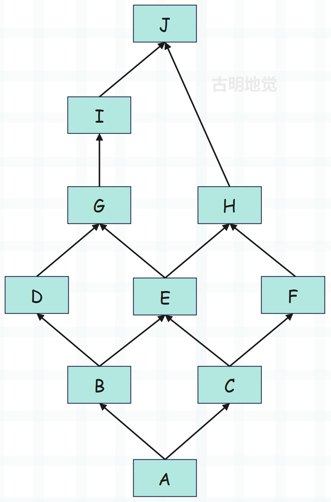

楔子
在上一篇文章中我们说到，内置类对象虽然在底层静态定义好了，但还不够完善。解释器在启动之后还要再打磨一下，然后才能得到我们平时使用的类型对象，而这个过程被称为类型对象的初始化。
类型对象的初始化，是通过 Objects/typeobject.c 中的 PyType_Ready 函数实现的，它主要完成以下三个工作：
- 给类型对象设置类型和基类信息；
- 类对象属性字典的填充；
- 类对象 MRO 的设置与属性继承；
我们来逐一解释。
给类型对象设置类型和基类信息
介绍 type 和 object 之间的恩怨纠葛时，我们说类对象的基类是在初始化的时候设置的，来看一下。
int
PyType_Ready(PyTypeObject *type)
{
// 注意：参数 type 只是一个普通的 C 变量，和 Python 的 <class 'type'> 无关
// dict：属性字典，即 __dict__，bases：继承的所有基类，即 __bases__
PyObject *dict, *bases;
// 继承的第一个基类，即 __base__
PyTypeObject *base;
Py_ssize_t i, n;
// ...
// 获取类型对象中 tp_base 字段指定的基类
base = type->tp_base;
// 如果基类为空、并且该类本身不是 <class 'object'>
if (base == NULL && type != &PyBaseObject_Type) {
// 那么将该类的基类设置为 <class 'object'>、即 &PyBaseObject_Type
base = type->tp_base = &PyBaseObject_Type;
Py_INCREF(base);
}
// 如果基类不是 NULL，也就是指定了基类，但是基类的属性字典是 NULL
// 说明该类的基类尚未初始化，那么会先对基类进行初始化
// 注意这里的 tp_dict，它表示每个类都会有的属性字典
// 而属性字典不等于 NULL，是类型对象初始化完成的重要标志
if (base != NULL && base->tp_dict == NULL) {
if (PyType_Ready(base) < 0)
goto error;
}
// Py_TYPE 是一个宏，会返回对象的 ob_type
// 如果该类型对象的 ob_type 为空，但是基类不为空（显然这里是针对于自定义类型对象）
// 那么将该类型对象的 ob_type 设置为基类的 ob_type
// 为什么要做这一步，我们后面会详细说
if (Py_TYPE(type) == NULL && base != NULL)
Py_TYPE(type) = Py_TYPE(base);
// 获取 __bases__，检测是否为空
bases = type->tp_bases;
// 如果为空，则根据 __base__ 进行设置
if (bases == NULL) {
// 如果 base 也为空，说明当前的类对象一定是 <class 'object'>
// 那么 bases 就是空元祖
if (base == NULL)
bases = PyTuple_New(0);
// 如果 base 不为空，那么 bases 就是 (base,)
else
bases = PyTuple_Pack(1, base);
if (bases == NULL)
goto error;
// 设置 tp_bases
type->tp_bases = bases;
}
// 设置属性字典，后续再聊
dict = type->tp_dict;
if (dict == NULL) {
dict = PyDict_New();
if (dict == NULL)
goto error;
type->tp_dict = dict;
}
// ...
}
对于指定了 tb_base 的类对象，当然就使用指定的基类，而对于没有指定 tp_base 的类对象，虚拟机会为其设置一个默认的基类：&PyBaseObject_Type ，也就是 Python 的 object。
所以对于 PyType_Type 而言，它的 tp_base 会指向 PyBaseObject_Type，这在 Python 中体现的就是 type 继承 object、或者说 object 是 type 的父类。但是所有的类的 ob_type 又都指向了 PyType_Type，包括 object，因此我们又说 type 是包括 object 在内的所有类对象的类对象（元类）。
而在获得了基类之后，会判断基类是否被初始化，如果没有，则需要先对基类进行初始化，而判断初始化是否完成的条件是 tp_dict 是否不等于 NULL。对于内置类对象来说，在解释器启动的时候，就已经作为全局对象存在了，所以它们的初始化不需要做太多工作，只需小小的完善一下即可，比如设置基类、类型、以及对 tp_dict 进行填充。
在基类设置完毕后，会继续设置 ob_type，而源码是这么设置的：Py_TYPE(type) = Py_TYPE(base)，也就是将基类的 ob_type 设置成了当前类的 ob_type，那么这一步的意义何在呢？直接设置成 <class 'type'> 不就完了吗？
class MyType(type):
pass
class A(metaclass=MyType):
pass
class B(A):
pass
print(type(A)) # <class '__main__.MyType'>
print(type(B)) # <class '__main__.MyType'>
我们看到 B 继承了 A，而 A 的类型是 MyType，那么 B 的类型也成了 MyType。也就是说 A 是由 XX 生成的，那么 B 在继承 A 之后，B 也会由 XX 生成，所以源码中的那一步就是用来做这件事情的。另外，这里之所以用 XX 代替，是因为 Python 里面不仅仅只有 type 是元类，那些继承了 type 的子类也可以是元类。
而且如果你熟悉 flask 的话，你会发现 flask 源码里面就有类似于这样的操作：
class MyType(type):
def __new__(mcs, name, bases, attrs):
# 关于第一个参数我们需要说一下，对于一般的类来说这里应该是 cls
# 但这里是元类，所以应该用 mcs，意思就是 metaclass
# 我们额外设置一些属性吧，关于元类后续会介绍
# 虽然目前还没有看底层实现，但至少使用方法应该知道
attrs.update({"name": "古明地觉"})
return super().__new__(mcs, name, bases, attrs)
def with_metaclass(meta, bases=(object,)):
return meta("", bases, {})
class Girl(with_metaclass(MyType, (int,))):
pass
print(type(Girl)) # <class '__main__.MyType'>
print(getattr(Girl, "name")) # 古明地觉
print(Girl("123")) # 123
所以逻辑很清晰了，虚拟机就是将基类的 metaclass 设置为子类的 metaclass。以 PyType_Type 为例，其 metaclass 就是 object 的 metaclass，也是它自己。而在源码的 PyBaseObject_Type 定义中也可以看到，其 ob_type 被设置成了 &PyType_Type。
tb_base 和 ob_type 设置完毕之后，会设置 tb_bases。tb_base 对应 __base__，tb_bases 对应 __bases__，我们用 Python 演示一下，这两者的区别。
class A:
pass
class B(A):
pass
class C:
pass
class D(B, C):
pass
print(D.__base__) # <class '__main__.B'>
print(D.__bases__) # (<class '__main__.B'>, <class '__main__.C'>)
print(C.__base__) # <class 'object'>
print(C.__bases__) # (<class 'object'>,)
print(B.__base__) # <class '__main__.A'>
print(B.__bases__) # (<class '__main__.A'>,)
我们看到 D 同时继承多个类，那么 tp_base 就是先出现的那个基类。而 tp_bases 则是继承的所有基类，但是基类的基类是不会出现的，比如 object。然后我们看看 C，因为 C 没有显式地继承任何类，那么 tp_bases 就是 NULL。但是 Python3 里面所有的类都默认继承了object，所以 tp_base 就是 object，而 tp_bases 显然是 (object,)。
以上就是 tp_base、ob_type、tp_bases 的设置，还是比较简单的，它们在设置完毕之后，就要对 tp_dict 进行填充了。而填充 tp_dict 是一个极其繁复的过程，我们继续往下看。
类对象属性字典（tp_dict）的填充
在给类对象设置完基类、以及类型信息之后，就开始填充属性字典了，这是一个非常复杂的过程。
int
PyType_Ready(PyTypeObject *type)
{
PyObject *dict, *bases;
PyTypeObject *base;
Py_ssize_t i, n;
// ...
// 初始化 tp_dict
dict = type->tp_dict;
if (dict == NULL) {
dict = PyDict_New();
if (dict == NULL)
goto error;
type->tp_dict = dict;
}
// 将与 type 相关的操作加入到 tp_dict 中
// 注意：这里的 type 是 PyType_Ready 的参数 type
// 它可以是 Python 的 <class 'type'>、也可以是 <class 'int'>
if (add_operators(type) < 0)
goto error;
if (type->tp_methods != NULL) { // 类的成员函数
if (add_methods(type, type->tp_methods) < 0)
goto error;
}
if (type->tp_members != NULL) { // 实例对象可以绑定的属性
if (add_members(type, type->tp_members) < 0)
goto error;
}
if (type->tp_getset != NULL) { // 类似于 @property
if (add_getset(type, type->tp_getset) < 0)
goto error;
}
// ...
}
在这个阶段，完成了将魔法函数的函数名和函数体加入 tp_dict 的过程，里面的 add_operators 、 add_methods 、 add_members 、 add_getset 都是完成填充 tp_dict 的动作。
那么这时候一个问题就出现了，以整数的 __sub__ 为例，我们知道它会对应底层的 C 函数 long_sub，可虚拟机是如何知道 __sub__ 和 long_sub 之间存在关联的呢？其实这种关联显然是一开始就已经定好了的，存放在一个名为 slotdefs 的数组中。
slot 与操作排序
在进入填充 tp_dict 的复杂操作之前，我们先来看一个概念：slot。slot 可以视为 PyTypeObject 中定义的操作，一个魔法函数对应一个 slot，比如 __add__、__sub__ 等等，都会对应一个 slot。我们看看 slot 的底层结构，它是由 slotdef 这个结构体来实现的，内部除了函数指针之外，它还包含了其它信息。
// Objects/typeobject.c
typedef struct wrapperbase slotdef;
//Include/descrobject.h
struct wrapperbase {
const char *name;
int offset;
void *function;
wrapperfunc wrapper;
const char *doc;
int flags;
PyObject *name_strobj;
};
// 从定义上看，slot 不是一个 PyObject
slot 中存储着 PyTypeObject 的操作对应的各种信息，并且 PyTypeObject 对象中的每一个操作都会有一个 slot 与之对应。然后是里面每个字段的含义：
- name：暴露给 Python 的名称，比如 "__sub__"、"__str__" 等等。
- offset：承载具体实现的 C 函数在 XXX 中的偏移量，至于这个 XXX 是什么，一会儿说。
- function：承载具体实现的 C 函数。
这里又整出来一个 PyHeapTypeObject，它是做什么的，别着急，我们先来看看如何创建一个 slot。Python 在底层提供了多个宏，其中最基本的是 TPSLOT 和 ETSLOT。
// Objects/typeobject.c
#define TPSLOT(NAME, SLOT, FUNCTION, WRAPPER, DOC) \
{NAME, offsetof(PyTypeObject, SLOT), (void *)(FUNCTION), WRAPPER, \
PyDoc_STR(DOC)}
#define ETSLOT(NAME, SLOT, FUNCTION, WRAPPER, DOC) \
{NAME, offsetof(PyHeapTypeObject, SLOT), (void *)(FUNCTION), WRAPPER, \
PyDoc_STR(DOC)}
所以 slot 里面的 offset 字段表示承载具体实现的 C 函数在 PyTypeObject 或 PyHeapTypeObject 中的偏移量。
// Include/cpython/object.h
typedef struct _heaptypeobject {
PyTypeObject ht_type;
PyAsyncMethods as_async;
PyNumberMethods as_number;
PyMappingMethods as_mapping;
PySequenceMethods as_sequence;
PyBufferProcs as_buffer;
PyObject *ht_name, *ht_slots, *ht_qualname;
struct _dictkeysobject *ht_cached_keys;
} PyHeapTypeObject;
这个 PyHeapTypeObject 是为自定义类对象准备的，它的第一个字段就是 PyTypeObject，至于其它的则是操作簇。至于为什么要有这么一个对象，原因是自定义类对象和相关的操作簇在内存中是连续的，必须在运行时动态分配内存，所以它是为自定义类准备的（具体细节后续剖析）。
那么这里就产生了一个问题，假设我们定义了一个类继承自 int，根据继承关系，显然自定义的类是具有 PyNumberMethods 这个操作簇的，它可以使用 __add__、__sub__ 之类的魔法函数。
但操作簇是定义在 PyTypeObject 里面的，而此时的 offset 却是基于 PyHeapTypeObject 得到的偏移量，那么通过这个 offset 显然无法准确找到操作簇里面的函数指针，比如 long_add、long_sub 等等。那我们要这个 offset 还有何用呢？答案非常诡异，这个 offset 是用来对操作进行排序的。排序？我整个人都不好了。

不过在理解为什么要对操作进行排序之前，需要先看看底层预定义的 slot 集合 slotdefs。
// Objects/typeobject.c
#define BINSLOT(NAME, SLOT, FUNCTION, DOC) \
ETSLOT(NAME, as_number.SLOT, FUNCTION, wrap_binaryfunc_l, \
NAME "($self, value, /)\n--\n\nReturn self" DOC "value.")
#define RBINSLOT(NAME, SLOT, FUNCTION, DOC) \
ETSLOT(NAME, as_number.SLOT, FUNCTION, wrap_binaryfunc_r, \
NAME "($self, value, /)\n--\n\nReturn value" DOC "self.")
#define SQSLOT(NAME, SLOT, FUNCTION, WRAPPER, DOC) \
ETSLOT(NAME, as_sequence.SLOT, FUNCTION, WRAPPER, DOC)
#define MPSLOT(NAME, SLOT, FUNCTION, WRAPPER, DOC) \
ETSLOT(NAME, as_mapping.SLOT, FUNCTION, WRAPPER, DOC)
static slotdef slotdefs[] = {
// ...
/* name = "__repr__"
* offset = offsetof(PyTypeObject, tp_repr)
* function = slot_tp_repr
* wrapper = wrap_unaryfunc
*/
TPSLOT("__repr__", tp_repr, slot_tp_repr, wrap_unaryfunc,
"__repr__($self, /)\n--\n\nReturn repr(self)."),
/* name = "__hash__"
* offset = offsetof(PyTypeObject, tp_hash)
* function = slot_tp_hash
* wrapper = wrap_hashfunc
*/
TPSLOT("__hash__", tp_hash, slot_tp_hash, wrap_hashfunc,
"__hash__($self, /)\n--\n\nReturn hash(self)."),
FLSLOT("__call__", tp_call, slot_tp_call, (wrapperfunc)(void(*)(void))wrap_call,
"__call__($self, /, *args, **kwargs)\n--\n\nCall self as a function.",
PyWrapperFlag_KEYWORDS),
TPSLOT("__str__", tp_str, slot_tp_str, wrap_unaryfunc,
"__str__($self, /)\n--\n\nReturn str(self)."),
TPSLOT("__getattribute__", tp_getattro, slot_tp_getattr_hook,
wrap_binaryfunc,
"__getattribute__($self, name, /)\n--\n\nReturn getattr(self, name)."),
// ...
/* name = "__new__"
* offset = offsetof(PyTypeObject, tp_new)
* function = slot_tp_new
* wrapper = NULL
*/
TPSLOT("__new__", tp_new, slot_tp_new, NULL,
"__new__(type, /, *args, **kwargs)\n--\n\n"
"Create and return new object. See help(type) for accurate signature."),
/* name = "__del__"
* offset = offsetof(PyTypeObject, tp_finalize)
* function = slot_tp_finalize
* wrapper = wrap_del
*/
TPSLOT("__del__", tp_finalize, slot_tp_finalize, (wrapperfunc)wrap_del, ""),
// ...
/* name = "__add__"
* offset = offsetof(PyHeapTypeObject, as_number.nb_add)
* function = slot_nb_add
* wrapper = wrap_binaryfunc_l
*/
BINSLOT("__add__", nb_add, slot_nb_add,
"+"),
/* name = "__radd__"
* offset = offsetof(PyHeapTypeObject, as_number.nb_add)
* function = slot_nb_add
* wrapper = wrap_binaryfunc_r
*/
RBINSLOT("__radd__", nb_add, slot_nb_add,
"+"),
BINSLOT("__sub__", nb_subtract, slot_nb_subtract,
"-"),
RBINSLOT("__rsub__", nb_subtract, slot_nb_subtract,
"-"),
BINSLOT("__mul__", nb_multiply, slot_nb_multiply,
"*"),
RBINSLOT("__rmul__", nb_multiply, slot_nb_multiply,
"*"),
BINSLOT("__mod__", nb_remainder, slot_nb_remainder,
"%"),
RBINSLOT("__rmod__", nb_remainder, slot_nb_remainder,
"%"),
// ...
/* name = "__getitem__"
* offset = offsetof(PyHeapTypeObject, as_mapping.mp_subscript)
* function = slot_mp_subscript
* wrapper = wrap_binaryfunc
*/
MPSLOT("__getitem__", mp_subscript, slot_mp_subscript,
wrap_binaryfunc,
"__getitem__($self, key, /)\n--\n\nReturn self[key]."),
// ...
/* name = "__getitem__"
* offset = offsetof(PyHeapTypeObject, as_sequence.sq_item)
* function = slot_sq_item
* wrapper = wrap_sq_item
*/
SQSLOT("__getitem__", sq_item, slot_sq_item, wrap_sq_item,
"__getitem__($self, key, /)\n--\n\nReturn self[key]."),
}
在 slotdefs 中可以发现，操作名和操作并不是一一对应的，存在多个操作对应同一个操作名、或者多个操作名对应同一个操作的情况。那么在填充 tp_dict 时，就会出现问题，比如 __getitem__，在 tp_dict 中与其对应的是 mp_subscript 还是 sq_item 呢？这两者都是通过 [] 进行操作的，比如字典根据 key 获取 value、列表基于索引获取元素，对应的都是 __getitem__。
为了解决这个问题，就需要利用 slot 中的 offset 信息对 slot（也就是操作）进行排序。回顾一下 PyHeapTypeObject 的定义，与一般的 struct 定义不同，它的各个字段的顺序是非常关键的，在顺序中隐含着操作优先级的问题。

在 PyHeapTypeObject 中，PyMappingMethods 的位置在 PySequenceMethods 之前，mp_subscript 是 PyMappingMethods 中的一个函数指针，而 sq_item 又是 PySequenceMethods 中的一个函数指针。那么最终计算出来的偏移量就存在如下关系：
offset(mp_subscript) < offset(sq_item)
因此如果在一个 PyTypeObject 中，既定义了 mp_subscript，又定义了 sq_item，那么虚拟机将选择 mp_subscript 与 __getitem__ 建立联系。我们举个栗子：
class A(list):
def __getitem__(self, item):
return item
a = A([])
print(a) # []
print(a[0]) # 0
print(a["xxx"]) # xxx
我们自定义的类实现了 __getitem__，所以会对应 mp_subscript 或 sq_item，那么到底是哪一种呢？显然根据偏移量的关系，虚拟机最终选择了让 mp_subscript 和 __getitem__ 建立联系。
事实上不看偏移量我们也知道答案，因为 sq_item 表示基于索引取值，如果 [] 里面的值是字符串，那么铁定报错。但这里没有报错，说明和 __getitem__ 建立联系的不是 sq_item。
注：如果是针对内置类对象，则没有这么复杂，因为它们的操作在底层是静态写死的。但对于自定义类对象来说，需要有一个基于偏移量排序、查找的过程。
slot 变成 descriptor
看一下之前的一张图：

当时说 "__sub__" 对应的 value 并不是一个直接指向 long_sub 函数的指针，而是指向一个结构体，至于指向 long_sub 函数的指针则在该结构体内部。那么问题来了，这个结构体是不是上面的 slot 呢？
我们知道在 slot 中，包含了一个操作的相关信息。但是很可惜，在 tp_dict 中，与 "__sub__" 关联在一起的，一定不会是 slot，因为它不是一个 PyObject，无法将其指针放在字典中。如果再深入思考一下，会发现 slot 也无法被调用。因为它不是一个 PyObject，那么它就没有 ob_type 这个字段，也就无从谈起什么 tp_call 了，所以 slot 是无论如何也无法满足 Python 中可调用（callable）这一条件的。
前面我们说过，虚拟机在 tp_dict 中找到对应的操作后，会调用该操作，所以 tp_dict 中与 "__sub__" 对应的只能是包装了 slot 的 PyObject（的指针），我们称之为 wrapper descriptor。在 Python 内部存在多种 wrapper descriptor，它在底层对应的结构体为 PyWrapperDescrObject。
// Include/descrobject.h
typedef struct {
PyObject_HEAD
PyTypeObject *d_type;
PyObject *d_name;
PyObject *d_qualname;
} PyDescrObject;
#define PyDescr_COMMON PyDescrObject d_common
typedef struct {
// 相当于 PyDescrObject d_common
PyDescr_COMMON;
// slot
struct wrapperbase *d_base;
// 函数指针
void *d_wrapped;
} PyWrapperDescrObject;
以上就是 wrapper descriptor 在底层的定义，一个 wrapper descriptor 包含一个 slot，其创建是通过 PyDescr_NewWrapper 完成的。
// Objects/descrobject.c
PyObject *
PyDescr_NewWrapper(PyTypeObject *type, struct wrapperbase *base, void *wrapped)
{
// 声明 wrapper descriptor 指针
PyWrapperDescrObject *descr;
// 调用 descr_new 申请内存
descr = (PyWrapperDescrObject *)descr_new(&PyWrapperDescr_Type,
type, base->name);
// 设置字段属性
if (descr != NULL) {
descr->d_base = base;
descr->d_wrapped = wrapped;
}
return (PyObject *)descr;
}
static PyDescrObject *
descr_new(PyTypeObject *descrtype, PyTypeObject *type, const char *name)
{
PyDescrObject *descr;
// 为 PyDescrObject 申请内存
descr = (PyDescrObject *)PyType_GenericAlloc(descrtype, 0);
// 设置字段属性
if (descr != NULL) {
Py_XINCREF(type);
descr->d_type = type;
descr->d_name = PyUnicode_InternFromString(name);
if (descr->d_name == NULL) {
Py_DECREF(descr);
descr = NULL;
}
else {
descr->d_qualname = NULL;
}
}
return descr;
}
Python 内部的各种 wrapper descriptor 都会包含 PyDescrObject，也就是类型对象相关的一些信息；d_base 对应 slot；而 d_wrapped 则存放着最重要的东西：操作对应的函数指针，比如 PyLong_Type，其 tp_dict["__sub__"].d_wrapped 就是 &long_sub。
print(int.__sub__)
print(str.__add__)
print(str.__getitem__)
print(tuple.__hash__)
"""
<slot wrapper '__sub__' of 'int' objects>
<slot wrapper '__add__' of 'str' objects>
<slot wrapper '__getitem__' of 'str' objects>
<slot wrapper '__hash__' of 'tuple' objects>
"""
我们看到这些魔法函数都是一个 wrapper descriptor 对象，也就是对 slot 包装之后的描述符。wrapper descriptor 对象在底层对应 PyWrapperDescrObject，其类型是 PyWrapperDescr_Type，tp_call 为 wrapperdescr_call。
print(int.__sub__.__class__)
print(str.__add__.__class__)
print(str.__getitem__.__class__)
print(tuple.__hash__.__class__)
"""
<class 'wrapper_descriptor'>
<class 'wrapper_descriptor'>
<class 'wrapper_descriptor'>
<class 'wrapper_descriptor'>
"""
# int.__sub__ 等价于 int.__dict__["__sub__"]
print(int.__dict__["__sub__"].__class__)
"""
<class 'wrapper_descriptor'>
"""
打印的结果是 <class 'wrapper_descriptor'>，说明类型对象 wrapper_descriptor 在底层对应 PyWrapperDescr_Type。

所以内置类对象的属性字典中存储的是字符串到 wrapper descriptor 的映射。
建立联系
slotdefs 里面包含了一堆 slot，每个 slot 对应类型对象定义的一个操作，比如 __getattr__、__new__、__add__、__getitem__ 等等。当然啦，虚拟机还会对 slotdefs 进行排序，排序之后再从头到尾遍历 slotdefs，基于每个 slot 创建一个 wrapper descriptor。然后在 tp_dict 中再建立从操作名到 wrapper descriptor 的映射，这个过程是在 add_operators 中完成的。

我们看一下 add_operators 的逻辑。
static int slotdefs_initialized = 0;
static void
init_slotdefs(void)
{
slotdef *p;
if (slotdefs_initialized)
return;
for (p = slotdefs; p->name; p++) {
assert(!p[1].name || p->offset <= p[1].offset);
// slot 有一个 name 字段和一个 name_strobj 字段
// 它们都是暴露给 Python 的操作名，只不过一个是 C 字符串，一个是 Python 字符串
// 基于 C 字符串创建 Python 字符串
p->name_strobj = PyUnicode_InternFromString(p->name);
if (!p->name_strobj || !PyUnicode_CHECK_INTERNED(p->name_strobj))
Py_FatalError("Out of memory interning slotdef names");
}
// 该操作只会执行一次
slotdefs_initialized = 1;
}
static int
add_operators(PyTypeObject *type)
{
// 属性字典
PyObject *dict = type->tp_dict;
// slot，在底层是一个 slotdef 结构体
slotdef *p;
// wrapper descriptor
PyObject *descr;
void **ptr;
// 而 init_slotdefs 就是基于 C 字符串创建 Python 字符串
// p->name_strobj = PyUnicode_InternFromString(p->name);
init_slotdefs();
for (p = slotdefs; p->name; p++) {
// 如果 slot 中没有指定 wrapper，则无需处理
if (p->wrapper == NULL)
continue;
// 获取 slot 对应的操作在 PyTypeObject 中的函数指针
ptr = slotptr(type, p->offset);
if (!ptr || !*ptr)
continue;
// 如果 tp_dict 中已经存在操作名，则放弃
if (PyDict_GetItemWithError(dict, p->name_strobj))
continue;
if (PyErr_Occurred()) {
return -1;
}
if (*ptr == (void *)PyObject_HashNotImplemented) {
if (PyDict_SetItem(dict, p->name_strobj, Py_None) < 0)
return -1;
}
else {
// 创建 wrapper descriptor
descr = PyDescr_NewWrapper(type, p, *ptr);
if (descr == NULL)
return -1;
// 将 "操作名": wapper descriptor 放入 tp_dict 中
if (PyDict_SetItem(dict, p->name_strobj, descr) < 0) {
Py_DECREF(descr);
return -1;
}
Py_DECREF(descr);
}
}
if (type->tp_new != NULL) {
if (add_tp_new_wrapper(type) < 0)
return -1;
}
return 0;
}
在 add_operators 中，首先调用 init_slotdefs，然后遍历 slotdefs 数组，通过 slotptr 获取该 slot 对应的操作在 PyTypeObject 中的函数指针。紧接着创建 wrapper descriptor，然后在 tp_dict 中建立从操作名（slotdef.name_strobj）到操作（wrapper descriptor）的映射。
但需要注意的是，在创建 wrapper descriptor 之前，虚拟机会检查在 tp_dict 中是否存在同名操作，如果存在了，则不会再次建立从操作名到操作的关联。也正是这种检查机制与排序机制相结合，虚拟机才能在拥有相同操作名的多个操作中选择优先级最高的操作。
add_operators 里面的大部分动作都很简单、直观，而最难的动作隐藏在 slotptr 这个函数当中，它的功能是完成从 slot 到 slot 对应操作的真实函数指针的转换。我们知道在 slot 中存放着用来操作的 offset，但不幸的是，对于自定义类的操作簇来说，这个 offset 是相对于 PyHeapTypeObject 的偏移，而操作的真实函数指针却是在 PyTypeObject 中指定的。
此外 PyTypeObject 和 PyHeapTypeObject 也不是同构的，因为 PyHeapTypeObject 中包含了 PyNumberMethods 结构体，但 PyTypeObject 只包含了 PyNumberMethods * 指针。所以 slot 中存储的关于操作的 offset 对 PyTypeObject 来说，不能直接用，必须先转换。
举个栗子，假如有以下调用（slotptr 一会说）：
slotptr(&PyLong_Type, offset(PyHeapTypeObject, long_sub))
首先会判断这个偏移量是否大于 offset(PyHeapTypeObject, as_number)，所以会从 PyHeapTypeObject 对象中获取 as_number 字段的指针 p，然后在 p 的基础上进行偏移就可以得到实际的函数地址。所以偏移量 delta 为：
offset(PyHeapTypeObject, long_sub) - offset(PyHeapTypeObject, as_number)
而这个复杂的过程就在 slotptr 中完成：
static void **
slotptr(PyTypeObject *type, int ioffset)
{
char *ptr;
long offset = ioffset;
/* Note: this depends on the order of the members of PyHeapTypeObject! */
assert(offset >= 0);
assert((size_t)offset < offsetof(PyHeapTypeObject, as_buffer));
// 从 PyHeapTypeObject 中排在后面的 PySequenceMethods 开始判断
// 然后向前，依次判断 PyMappingMethods 和 PyNumberMethods
/*
* 为什么要这么做呢？假设我们首先从 PyNumberMethods 开始判断
* 如果一个操作的 offset 大于 as_numbers 在 PyHeapTypeObject 中的偏移量
* 那么我们还是没办法确认这个操作到底是属于谁的
* 只有从后往前进行判断，才能解决这个问题。
*/
if ((size_t)offset >= offsetof(PyHeapTypeObject, as_sequence)) {
ptr = (char *)type->tp_as_sequence;
offset -= offsetof(PyHeapTypeObject, as_sequence);
}
else if ((size_t)offset >= offsetof(PyHeapTypeObject, as_mapping)) {
ptr = (char *)type->tp_as_mapping;
offset -= offsetof(PyHeapTypeObject, as_mapping);
}
else if ((size_t)offset >= offsetof(PyHeapTypeObject, as_number)) {
ptr = (char *)type->tp_as_number;
offset -= offsetof(PyHeapTypeObject, as_number);
}
else if ((size_t)offset >= offsetof(PyHeapTypeObject, as_async)) {
ptr = (char *)type->tp_as_async;
offset -= offsetof(PyHeapTypeObject, as_async);
}
else {
ptr = (char *)type;
}
if (ptr != NULL)
ptr += offset;
return (void **)ptr;
}
好了，到现在我们应该能够摸清楚虚拟机在改造 PyTypeObject 对象时，对 tp_dict 做了什么了，我们以 PyLong_Type 举例说明：

在 add_operators 完成之后，PyLong_Type 如图所示。
从 PyLong_Type.tp_as_number 中延伸出去的部分是在编译时就已经确定好了的，而从 tp_dict 中延伸出去的部分则是在 Python 运行时环境初始化的时候才建立的。这个运行时环境初始化后面会单独说，现在就把它理解为解释器启动时做的准备工作即可。
另外， PyType_Ready 在通过 add_operators 添加了 PyTypeObject 中定义的一些 operator 后，还会通过 add_methods、add_numbers 和 add_getsets 添加 PyTypeObject 中定义的 tp_methods、tp_members 和 tp_getset 函数集。
这些过程和 add_operators 类似，不过最后添加到 tp_dict 中的就不再是 PyWrapperDescrObject ，而分别是 PyMethodDescrObject、PyMemberDescrObject、PyGetSetDescrObject 。
print(int.__add__)
print((123).__add__)
"""
<slot wrapper '__add__' of 'int' objects>
<method-wrapper '__add__' of int object at 0x100be5030>
"""
print(int.__add__.__class__)
print((123).__add__.__class__)
"""
<class 'wrapper_descriptor'>
<class 'method-wrapper'>
"""
实例在调用函数的时候，会将函数包装成方法，它是一个 wrapper method。所以 __add__ 对于 int 类型对象而言，叫魔法函数，对于整数对象而言，叫魔法方法。
// 像 str.__add__、int.__sub__，它们都是 wrapper descriptor
// 在底层对应 PyWrapperDescrObject 结构体实例
// 而像 "hello".__add__、(123).__sub__，它们都是 wrapper method
// 在底层对应 wrapperobject 结构体实例
// 但是我们看到 wrapperobject 只是多了一个 self 而已
// 所以 "hello".upper() 等价于 str.upper("hello")
typedef struct {
PyObject_HEAD
PyWrapperDescrObject *descr;
PyObject *self;
} wrapperobject;
// 关于函数和方法的区别后续还会细说
从目前来看，基本上算是解析完了，但是还有一点：
class A(int):
def __sub__(self, other):
return self, other
a = A(123)
print(a - 456) # (123, 456)
从结果上很容易看出，进行减法操作时，调用的是我们重写的 __sub__。这意味着虚拟机在初始化 A 的时候，对 tp_as_number 中的 nb_subtract 进行了特殊处理。那为什么虚拟机会知道要对 nb_subtract 进行特殊处理呢？当然肯定有小伙伴会说：这是因为我们重写了 __sub__ 啊，确实如此，但这是 Python 层面上的，如果站在虚拟机层面的话，答案还是在 slot 身上。

虚拟机在初始化类对象 A 时，会检测出 A 的 tp_dict 中存在 __sub__。在后面剖析自定义类对象的创建时会看到，因为在定义 class A 的时候，重写了 __sub__ 这个操作，所以在 A 的 tp_dict 中，__sub__ 一开始就会存在，虚拟机会检测到。
然后再根据 __sub__ 对应的 slot 顺藤摸瓜，找到 nb_substract，并且将这个函数指针替换为 slot 中指定的 &slot_nb_subtract。所以当后来虚拟机找 A 的 nb_substract 的时候，实际上找到的是 slot_nb_subtract。而在 slot_nb_subtract 中，会寻找 __sub__ 对应的描述符，然后找到在 A 中重写的函数（一个 PyFunctionObject *）。这样一来，就完成了对 int 的 __sub__ 行为的替换。
所以对于 A 来说，内存布局就是下面这样。

当然这仅仅是针对于 __sub__，至于其它操作还是会指向 PyLong_Type 中指定的函数。所以如果某个函数在 A 里面没有重写的话，那么会从 PyLong_Type 中寻找。
以上就是属性字典的填充，这个过程还是稍微有点复杂的。
类对象 MRO 的设置与属性继承
当完成属性字典的设置，就开始确定 MRO 了，即 method resolve order。
类对象 MRO 的设置
MRO 表示类继承之后，属性或方法的查找顺序。如果 Python 是单继承的话，那么这不是问题，直接一层一层向上找即可。但 Python 是支持多继承的，那么在多继承时，继承的顺序就成为了一个必须考虑的问题。
class A:
def foo(self):
print("A")
class B(A):
def foo(self):
print("B")
class C(A):
def foo(self):
print("C")
self.bar()
def bar(self):
print("bar C")
class D(C, B):
def bar(self):
print("bar D")
d = D()
d.foo()
"""
C
bar D
"""
首先打印的是字符串 "C"，表示调用的是 C 的 foo，说明把 C 写在前面，会先从 C 里面查找。但是下面打印了 "bar D"，这是因为 C 里面的 self 实际上是 D 的实例对象。
因为 D 在找不到 foo 函数的时候，会到父类里面找，但是同时也会将 self 传递过去。调用 self.bar 的时候，这个 self 是 D 的实例对象，所以还是会先到 D 里面找，如果找不到再去父类里面找。
而对于虚拟机而言，则是会在 PyType_Ready 中通过 mro_internal 函数确定 mro。虚拟机将创建一个 PyTupleObject 对象，里面存放一组类对象，这些类对象的顺序就是虚拟机确定的 mro。而这个元组，最终会被交给 tp_mro 字段保存。
由于确定 MRO 的 mro_internal 函数非常复杂，这里我们就不看源码了，只要能从概念上理解它即可。另外 Python 早期有经典类和新式类两种，现在则只存在新式类，而经典类和新式类采用的搜索策略是不同的，举个例子：
图中的箭头表示继承关系，比如：A 同时继承 B 和 C、B 继承 D、C 继承 E。
对于上图来说，经典类和新式类的查找方式是一样的，至于两边是否一样多则不重要。查找方式是先从 A 找到 I，再从 C 查找到 G。我们实际演示一下，由于经典类只在 Python2 中存在，所以下面只演示新式类。
I = type("I", (), {})
H = type("H", (I,), {})
F = type("F", (H,), {})
G = type("G", (), {})
D = type("D", (F,), {})
E = type("E", (G,), {})
B = type("B", (D,), {})
C = type("C", (E,), {})
A = type("A", (B, C), {})
for _ in A.__mro__:
print(_)
"""
<class '__main__.A'>
<class '__main__.B'>
<class '__main__.D'>
<class '__main__.F'>
<class '__main__.H'>
<class '__main__.I'>
<class '__main__.C'>
<class '__main__.E'>
<class '__main__.G'>
<class 'object'>
"""
A 继承两个类，然后这两个类分别继续继承，如果最终没有继承公共的类（忽略 object），那么经典类和新式类是一样的。像这种泾渭分明、各自继承各自的，都是先一条路找到黑，然后再去另外一条路找。
但如果是下面这种，分久必合、两者最终又继承了同一个类，那么经典类还是跟以前一样，按照每一条路都走到黑的方式。但是对于新式类，则是先从 A 找到 H，而 I 这个两边最终都继承的类不找了，然后从 C 找到 I，也就是在另一条路找到头。
我们测试一下：
# 新式类
I = type("I", (), {})
H = type("H", (I,), {})
F = type("F", (H,), {})
G = type("G", (I,), {}) # 这里让 G 继承 I
D = type("D", (F,), {})
E = type("E", (G,), {})
B = type("B", (D,), {})
C = type("C", (E,), {})
A = type("A", (B, C), {})
for _ in A.__mro__:
print(_)
"""
<class '__main__.A'>
<class '__main__.B'>
<class '__main__.D'>
<class '__main__.F'>
<class '__main__.H'>
<class '__main__.C'>
<class '__main__.E'>
<class '__main__.G'>
<class '__main__.I'>
<class 'object'>
"""
但是 Python 的多继承比我们想象的要复杂，原因就在于可以任意继承，如果 B 和 C 再分别继承两个类呢？那么我们这里的线路就又要多出两条了。不过既然要追求刺激，就贯彻到底喽，我们来看一下，如何从混乱不堪的继承关系中，找到正确的继承顺序。
由于 Python3 只有新式类，因此下面我们会以介绍新式类为主，经典类了解一下即可。
很多文章可能告诉你经典类采用深度优先算法，新式类采用广度优先算法，真的是这样吗？我们举一个例子：

假设我们调用 A() 的 foo 方法，但是 A 里面没有，那么理所应当会去 B 里面找。但是 B 里面也没有，而 C 和 D 里面有，那么这个时候是去 C 里面找还是去 D 里面找呢？根据我们之前的结论，显然是去 D 里面找，可如果按照广度优先的逻辑来说，那么应该是去 C 里面找啊。所以广度优先理论在这里就不适用了，因为 B 继承了 D，而 B 和 C 并没有直接关系，我们应该把 B 和 D 看成一个整体。
而 Python 的 MRO 实际上是采用了一种叫做 C3 的算法，这个 C3 算法比较复杂（其实也不算复杂），但是我个人总结出一个更加好记的结论，如下：
当沿着一条继承链寻找类时，默认会沿着该继承链一直找下去。但如果发现某个类出现在了另一条继承链当中，那么当前的继承链的搜索就会结束，然后在"最开始"出现分歧的地方转向下一条继承链的搜索。
这是我个人总结的，或许光看字面意思的话会比较难理解，但是通过例子就能明白了。

箭头表示继承关系，继承顺序是从左到右，比如这里的 A 就相当于 class A(B, C)，下面我们来从头到尾分析一下 A 的 MRO。
- 1）因为是 A 的 MRO，所以查找时，第一个类就是 A；
- 2）然后 A 继承 B 和 C，由于是两条路，因此我们说 A 这里就是一个分歧点。但由于 B 在前，所以接下来是 B，而现在 MRO 的顺序就是 A B；
- 3）但是 B 这里也出现了分歧点，不过不用管，因为我们说会沿着继承链不断往下搜索，现在 MRO 的顺序是A B D；
- 4）然后从 D 开始继续寻找，这里注意了，按理说会找到 G 的。但是 G 不止被一个类继承，也就是说沿着当前的继承链查找 G 时，发现 G 还出现在了其它的继承链当中。怎么办？显然要回到最初的分歧点，转向下一条继承链的搜索；
- 5）最初的分歧点是 A，那么该去找 C 了，现在 MRO 的顺序就是 A B D C；
- 6）注意 C 这里也出现了分歧点，而 A 的两条分支已经结束了，所以现在 C 就是最初的分歧点了。而 C 继承自 E 和 F，显然要搜索 E，那么此时 MRO 的顺序就是 A B D C E；
- 7）然后从 E 开始搜索，显然要搜索 G，此时 MRO 顺序变成 A B D C E G；
- 8）从 G 要搜索 I，此时 MRO 的顺序是 A B D C E G I；
- 9）从 I 开始搜索谁呢？由于 J 出现在了其它的继承链中，那么要回到最初的分歧点，也就是 C。那么下面显然要找 F，此时 MRO 的顺序是 A B D C E G I F；
- 10）F 只继承了 H，那么肯定要找 H，此时 MRO 的顺序是 A B D C E G I F H；
- 11）H 显然只能找 J 了，因此最终 A 的 MRO 的顺序就是 A B D C E G I F H J object；
我们实际测试一下：
J = type("J", (object, ), {})
I = type("I", (J, ), {})
H = type("H", (J, ), {})
G = type("G", (I, ), {})
F = type("F", (H, ), {})
E = type("E", (G, H), {})
D = type("D", (G, ), {})
C = type("C", (E, F), {})
B = type("B", (D, E), {})
A = type("A", (B, C), {})
# A B D C E G I F H J
for _ in A.__mro__:
print(_)
"""
<class '__main__.A'>
<class '__main__.B'>
<class '__main__.D'>
<class '__main__.C'>
<class '__main__.E'>
<class '__main__.G'>
<class '__main__.I'>
<class '__main__.F'>
<class '__main__.H'>
<class '__main__.J'>
<class 'object'>
"""
为了加深理解，我们再举个更复杂的例子：

- 1）首先是 A，A 继承 B1、B2、B3，会先走 B1，此时 MRO 是 A B1。并且现在 A 是分歧点；
- 2）从 B1 处本来应该去找 C1，但是 C1 还被其它类继承，也就是出现在了其它的继承链当中。因此要回到最初的分歧点 A，从下一条继承链开始找，显然要找 B2，此时 MRO 就是 A B1 B2；
- 3）从 B2 开始，显然要找 C1，此时 MRO 的顺序就是 A B1 B2 C1；
- 4）从C1开始，显然要找 D1，因为 D1 只被 C1 继承，也就是说，它没有出现在另一条继承链当中，因此此时 MRO 的顺序是 A B1 B2 C1 D1；
- 5）对于 D1 而言，显然接下来是不会去找 E 的，因为 E 还出现在另外的继承链当中。咋办? 回到最初的分歧点，注意这里的分歧点还是 A，因为 A 的分支还没有走完。显然此时要走 B3，那么 MRO 的顺序就是 A B1 B2 C1 D1 B3；
- 6）从 B3 开始找，显然要找 C2，注意：A 的分支已经走完，此时 B3 就成了新的最初分歧点。现在 MRO 的顺序是 A B1 B2 C1 D1 B3 C2；
- 7）C2 会找 D2吗？显然不会，因为 D2 还被 C3 继承，所以它出现在了其它的继承链中。于是要回到最初的分歧点，这里是 B3，显然下面要找 C3。另外由于 B3 的分支也已经走完，所以现在 C3 就成了新的最初分歧点。此时 MRO 的顺序是 A B1 B2 C1 D1 B3 C2 C3；
- 8）从 C3 开始，显然要找 D2，此时 MRO 的顺序是 A B1 B2 C1 D1 B3 C2 C3 D2；
- 9）但是 D2 不会找 E，因此回到最初分歧点 C3，下面要找 D3。而 D3 找完之后显然只能再找 E 了，因此最终 MRO 的顺序是 A B1 B2 C1 D1 B3 C2 C3 D2 D3 E object；
下面测试一下：
E = type("E", (), {})
D1 = type("D1", (E,), {})
D2 = type("D2", (E,), {})
D3 = type("D3", (E,), {})
C1 = type("C1", (D1, D2), {})
C2 = type("C2", (D2,), {})
C3 = type("C3", (D2, D3), {})
B1 = type("B1", (C1,), {})
B2 = type("B2", (C1, C2), {})
B3 = type("B3", (C2, C3), {})
A = type("A", (B1, B2, B3), {})
for _ in A.__mro__:
print(_)
"""
<class '__main__.A'>
<class '__main__.B1'>
<class '__main__.B2'>
<class '__main__.C1'>
<class '__main__.D1'>
<class '__main__.B3'>
<class '__main__.C2'>
<class '__main__.C3'>
<class '__main__.D2'>
<class '__main__.D3'>
<class '__main__.E'>
<class 'object'>
"""
以上就是计算 MRO 所采用的策略，关于源码部分我们就不看了，复杂是一方面，重点是没什么太大必要。个人觉得，关于多继承从目前这个层面上来理解已经足够了。另外通过以上可以看出，Python 支持非常复杂的继承关系。但是实际使用多继承的时候，我们最好还是要斟酌一下，因为多继承如果设计的不好，容易使得类的继承关系变得非常混乱。
为此，Python 提供了一种模式叫做 Mixin，可以网上搜索一下。比较简单，这里就不展开了。
self 在多继承里面的一些坑
在执行父类函数时传入的 self 参数，是很多初学者容易犯的错误。
class A:
def foo(self):
print("A: foo")
self.bar()
def bar(self):
print("A: bar")
class B:
def bar(self):
print("B: bar")
class C(A, B):
def bar(self):
print("C: bar")
C().foo()
"""
A: foo
C: bar
"""
C 的实例对象在调用 foo 的时候，首先会去 C 里面查找，但是 C 没有，所以按照 MRO 的顺序会去 A 里面找。而 A 里面存在，所以调用，但是调用时传递的 self 是 C 的实例对象，因为是 C 的实例对象调用的。所以里面的 self.bar，这个 self 还是 C 的实例对象，那么调用 bar 的时候，会去哪里找呢？显然还是从 C 里面找，所以 self.bar() 的时候打印的是字符串 C: bar，而不是 A: bar。
同理再来看一个关于 super 的栗子：
class A:
def foo(self):
super(A, self).foo()
class B:
def foo(self):
print("B: foo")
class C(A, B):
pass
try:
A().foo()
except Exception as e:
print(e) # 'super' object has no attribute 'foo'
# 首先 A 的父类是 object
# 所以 super(A, self).foo() 的时候会去执行 object 的 foo
# 而 object 没有 foo，所以报错
# 但如果是 C 的实例调用呢？
C().foo() # B: foo
如果是 C() 调用 foo 的话，最终却执行了 B 的 foo，这是什么原因呢？首先 C 里面没有 foo，那么会去执行 A 的 foo，但是执行时候的 self 是 C 的实例对象，super 里面的 self 也是 C 里面的 self。
然后我们知道对于 C 而言，其 MRO 是 C、A、B、object。所以此时的 super(A, self).foo() 就表示：沿着 C 的 MRO 去找 foo 函数，但是 super 里面有一个 A，表示不要从头开始找，而是从 A 的后面开始找，所以下一个就找到 B 了。
所以说 super 不一定就是父类，而是要看里面的 self 是谁。总之：super(xxx, self) 一定是 type(self) 对应的 MRO 中，xxx 的下一个类。再举个栗子：
class A:
def foo(self):
# 从 B 里面找 foo
super(A, self).foo()
# 从 C 里面找 foo
super(B, self).foo()
class B:
def foo(self):
print("B: foo")
class C:
def foo(self):
print("C: foo")
class D(A, B, C):
pass
D().foo()
"""
B: foo
C: foo
"""
当 D() 调用 foo 的时候，D 里面没有，那么按照继承关系一定是去 A 里面找。而 self 是 D 的 self，那么 super(A, self) 就是 D 对应的 MRO 中，A 的下一个类，也就是 B；super(B, self) 就是 D 对应的 MRO 中，B 的下一个类，也就是 C。
基类冲突
虽然可以继承多个类，但是这些类之间有可能发生冲突，举个栗子：
class A(int, str):
pass
# TypeError: multiple bases have instance lay-out conflict
我们发现执行的时候报错了，这个类虚拟机压根就不会让你创建，原因很简单，它们的实例对象在内存布局上发生冲突了。
比如 A("123") 这个实例，虚拟机是把它看成整数呢？还是字符串呢？因为 A 同时继承 int 和 str，就意味着其实例既可以像整数一样使用除法，也可以像字符串一样调用 join 方法。但是整数没有 join，字符串也无法使用除法，因此这个类是不合理的。继承的多个基类，在实例对象的内存布局上产生了冲突。
虽然上面给出了解释，但如果仔细推敲，会发现这个解释有些站不住脚，因为我们自定义的类没有这个问题。如果是自定义的类，别说继承两个，就算继承十个毫无关系的类，也不会出现冲突，这又是什么原因呢？其实两者的差别，就在于内置类对象的实例对象是没有属性字典的，但是自定义类对象的实例对象有。
class Base1:
__slots__ = ("a",)
class Base2:
__slots__ = ("a",)
class A(Base1, Base2):
pass
# TypeError: multiple bases have instance lay-out conflict
此时 Base1 和 Base2 的实例，和内置类对象的实例是类似的，都没有属性字典，或者说实例对象可以绑定哪些属性已经定好了。同时继承 Base1 和 Base2 也会发生冲突。
结论：对于实例对象没有属性字典的类对象，最多同时继承一个。但是也有特例，如果类对象不接收任何参数，即使它的实例对象没有属性字典，也没有影响。
class Base1:
__slots__ = ("a",)
class Base2:
__slots__ = ()
# 合法
class A(Base2, int):
pass
# 不合法
class B(Base1, int):
pass
Base1 的实例对象显然可以绑定一个属性 a，意味着 Base1 可以接收一个参数；Base2 的实例对象无法绑定任何属性，意味着 Base2 不接收任何参数。
因此 class A(Base1, int) 是不合法的，因为 Base1 和 int 的实例没有属性字典，但它们都接收参数。同理 class A (Base1, str)、class A(Base1, dict) 也一样。但是 class A(Base2, str) 没有影响，因为 Base2 的实例无法绑定任何属性，因此也就不存在内存布局上的冲突。
当继承的基类之间存在父子关系时
看个栗子：
class Base:
pass
class A(Base):
pass
class B(Base, A):
pass
"""
TypeError: Cannot create a consistent method resolution
order (MRO) for bases Base, A
"""
这个错误的原因应该不难理解，B 继承了 Base 和 A，但是 Base 和 A 之间又是父子关系。比如 B 在找不到某个方法时，会到 Base 里面找，Base 找不到再去 A 里面找。但如果 A 再找不到，就又回到了 Base，因为 A 继承 Base，那么此时就出现了闭环，这是不允许的。
但如果把 B 的创建改成 class B(A, Base) 则没问题，所以当继承的多个类之间也存在继承关系时，子类要在父类的前面。当然啦，最正确的做法应该是只继承子类，比如这里的 class B(A)。因为 A 已经继承了 Base，所以 B 只需继承 A 即可，无需再继承 Base。像 class B(A, Base) 这种做法虽然不会报错，但明显有些画蛇添足。
继承基类操作
子类在找不到某个属性或方法时，会去基类里面找，但这背后的原理是什么呢？答案简单到超乎你想象，就是单纯的拷贝。虚拟机在确定 MRO 之后，就会遍历 MRO 顺序列表，里面存储了该类的所有直接基类、间接基类（也就是基类的基类）。而虚拟机会将自身没有、但是基类中存在的操作拷贝到该类当中，从而完成对基类操作的继承动作。
而这个继承的动作是发生在 inherit_slots 中。
int
PyType_Ready(PyTypeObject *type)
{
// 计算 MRO
if (mro_internal(type, NULL) < 0)
goto error;
// inherit_special 会从基类继承 tp_new、tp_traverse、tp_clear 等
if (type->tp_base != NULL)
inherit_special(type, type->tp_base);
// 获取 MRO 顺序列表
bases = type->tp_mro;
assert(bases != NULL);
assert(PyTuple_Check(bases));
n = PyTuple_GET_SIZE(bases);
// 遍历所有的基类，包括直接基类、间接基类
// 由于 MRO 的第一个类是其本身，所以遍历是从第二项开始的
for (i = 1; i < n; i++) {
PyObject *b = PyTuple_GET_ITEM(bases, i);
if (PyType_Check(b))
// 继承基类操作
inherit_slots(type, (PyTypeObject *)b);
}
// ...
}
在 inherit_slots 中会拷贝相当多的操作，这里就以整型为例：
static void
inherit_slots(PyTypeObject *type, PyTypeObject *base)
{
PyTypeObject *basebase;
#undef SLOTDEFINED
#undef COPYSLOT
#undef COPYNUM
#undef COPYSEQ
#undef COPYMAP
#undef COPYBUF
#define SLOTDEFINED(SLOT) \
(base->SLOT != 0 && \
(basebase == NULL || base->SLOT != basebase->SLOT))
#define COPYSLOT(SLOT) \
if (!type->SLOT && SLOTDEFINED(SLOT)) type->SLOT = base->SLOT
#define COPYASYNC(SLOT) COPYSLOT(tp_as_async->SLOT)
#define COPYNUM(SLOT) COPYSLOT(tp_as_number->SLOT)
#define COPYSEQ(SLOT) COPYSLOT(tp_as_sequence->SLOT)
#define COPYMAP(SLOT) COPYSLOT(tp_as_mapping->SLOT)
#define COPYBUF(SLOT) COPYSLOT(tp_as_buffer->SLOT)
if (type->tp_as_number != NULL && base->tp_as_number != NULL) {
basebase = base->tp_base;
if (basebase->tp_as_number == NULL)
basebase = NULL;
COPYNUM(nb_add);
COPYNUM(nb_subtract);
COPYNUM(nb_multiply);
COPYNUM(nb_remainder);
COPYNUM(nb_divmod);
COPYNUM(nb_power);
COPYNUM(nb_negative);
COPYNUM(nb_positive);
COPYNUM(nb_absolute);
COPYNUM(nb_bool);
COPYNUM(nb_invert);
COPYNUM(nb_lshift);
COPYNUM(nb_rshift);
COPYNUM(nb_and);
COPYNUM(nb_xor);
COPYNUM(nb_or);
COPYNUM(nb_int);
COPYNUM(nb_float);
COPYNUM(nb_inplace_add);
COPYNUM(nb_inplace_subtract);
COPYNUM(nb_inplace_multiply);
COPYNUM(nb_inplace_remainder);
COPYNUM(nb_inplace_power);
COPYNUM(nb_inplace_lshift);
COPYNUM(nb_inplace_rshift);
COPYNUM(nb_inplace_and);
COPYNUM(nb_inplace_xor);
COPYNUM(nb_inplace_or);
COPYNUM(nb_true_divide);
COPYNUM(nb_floor_divide);
COPYNUM(nb_inplace_true_divide);
COPYNUM(nb_inplace_floor_divide);
COPYNUM(nb_index);
COPYNUM(nb_matrix_multiply);
COPYNUM(nb_inplace_matrix_multiply);
}
// ...
}
我们在里面看到了很多熟悉的东西，这些都是在继承时需要拷贝的操作。比如布尔类型，PyBool_Type 中并没有设置 nb_add，但是 PyLong_Type 中设置了，而 bool 继承 int。所以布尔值是可以直接进行运算的，当然和整数、浮点数运算也是可以的。因此在 Numpy 中，判断一个数组里面有多少个满足条件的元素，可以使用 Numpy 提供的向量化操作进行比较，会得到一个具有相同长度的数组，里面的每一个元素为表示是否满足条件的布尔值。然后直接通过 sum 运算即可，因为运算的时候，True 会被解释成 1，False 会被解释成 0。
import numpy as np
arr = np.array([2, 4, 7, 3, 5])
print(arr > 4) # [False False True False True]
print(np.sum(arr > 4)) # 2
# 也可以和整数直接运算
print(2.2 + True) # 3.2
所以在 Python 中，整数可以和布尔值进行运算，看似不可思议，但又在情理之中。
填充基类的子类列表
到这里，PyType_Ready 还剩下最后一个重要的动作：设置基类的子类列表。
在 PyTypeObject 中，有一个 tp_subclasses，这个字段在 PyType_Ready 完成之后，将会是一个 list 对象，其中存放着所有直接继承该类的类对象。
class Base:
pass
class A(Base):
pass
class B(A):
pass
# A 继承 Base
print(Base.__subclasses__())
"""
[<class '__main__.A'>]
"""
tp_subclasses 对应 Python 的 __subclasses__，当调用的时候会打印直接继承自己的类。注意是直接继承，间接继承不算，所以上面打印的列表里面只有 A 没有 B。那么问题来了，这一步是何时发生的呢？Base 怎么知道 A 继承了它呢？很简单，A 在继承 Base 的操作之后，也会将自身设置到 Base 的 tp_subclasses 中。
而在 PyType_Ready 中，这一步是通过调用 add_subclass 实现的。
int
PyType_Ready(PyTypeObject *type)
{
// ...
// 拿到所有的基类
bases = type->tp_bases;
n = PyTuple_GET_SIZE(bases);
// 挨个遍历，将自身加入到基类的 tp_subclasses 中
// 因为一个类可以直接继承很多基类，而每个基类都要添加
for (i = 0; i < n; i++) {
PyObject *b = PyTuple_GET_ITEM(bases, i);
if (PyType_Check(b) &&
add_subclass((PyTypeObject *)b, type) < 0)
goto error;
}
// ...
}
当然啦，一个类可以继承多个基类，一个基类也可以被多个子类继承，比如 object。
print(object.__subclasses__())
打印会输出非常多的内容，因为 Python 里面所有的类都继承 object，而在创建这些类的时候，都会将自身加入到 object 的 tp_subclasses 里面。
小结
到这里，我们算是完整地剖析了 PyType_Ready 的动作，可以看到，虚拟机对类对象进行了多种繁杂的改造工作，主要包括以下几部分：
- 设置类型信息、基类以及基类列表；
- 填充属性字典；
- 确定 MRO 顺序列表；
- 基于 MRO 顺序列表从基类继承操作；
- 设置基类的子类列表，或者说，将自身加入到基类的 tp_subclasses 中；
除了以上这些，还会继承 tp_as_number 等方法簇。
不同的类型，有些操作也会有一些不同的行为，但整体是一致的。因此具体到某个特定类型，可以自己跟踪 PyType_Ready 的具体过程。
欢迎大家关注我的公众号：古明地觉的编程教室。

如果觉得文章对你有所帮助，也可以请作者吃个馒头，Thanks♪(･ω･)ﾉ。